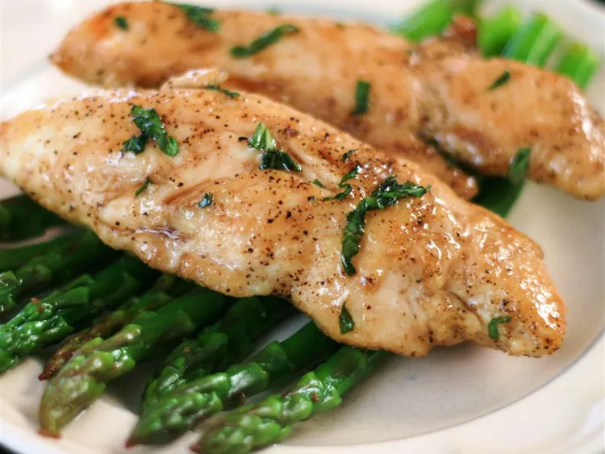

Basil Chicken Recipe

Description
Fresh basil is essential to get that fresh burst of flavor with a hint of
sweet and sour in this dish. The ingredients are all on
hand when my herb garden is in season! Add a salad and a favorite vegetable for a quick weeknight meal.
No need for a second paragraph. 'nuff said.
Ingredients
- 2 teaspoons olive oil
- 6 ounces chicken tenderloin strips
- ¼ teaspoon salt
- ⅛ teaspoon freshly ground black pepper
- 2 tablespoons chopped fresh basil
- 1 ½ teaspoons honey
- 1 ½ teaspoons balsamic vinegar, or more to taste
Steps
- Heat olive oil in a nonstick skillet over medium-high heat.
- Season chicken with salt and pepper.
- Cook and stir chicken in the hot oil until chicken is no longer
pink in the center, about 3 to 5 minutes.
- Stir basil, honey, and balsamic vinegar into chicken and cook for 1 more minute.
Back to Home Page